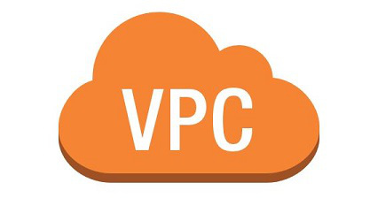

Amazon Virtual Private Cloud(Amazon VPC)에서는 사용자가 정의한 가상 네트워크로 AWS 리소스를 시작할 수 있습니다. 이 가상 네트워크는 AWS의 확장 가능한 인프라를 사용한다는 이점과 함께 고객의 자체 데이터 센터에서 운영하는 기존 네트워크와 매우 유사합니다. 
가상 프라이빗 네트워크(VPN), AWS Direct Connect(DX), VPC 피어링 연결, VPC 종단점, ClassicLink, 인터넷 게이트웨이, 네트워크 주소 변환(NAT) 게이트웨이 또는 NAT 인스턴스를 통해 VPC에 연결할 수 있습니다.